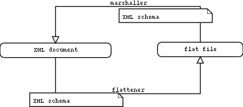

|
XML maker/flattener documentation |
This software contains two applications that produce an XML document from a flat file, or a flat file from an XML document according to an XML schema. An XML schema (.xsd) is a file that describes the structure of an XML document.
The first application (the maker) allows to load a flat file (e.g. a tab delimited file), to associate graphicaly the fields (e.g. tab delimited) in a flat file to the elements of an XML schema. The information in the flat file can then be processed and organized in an XML document.
The second application (the flattener) is used to graphically select some elements from a schema in order to produce a flat file containing the selected elements extracted from an XML document.
This software was created with the purpose of facilitating the exchange of protein protein interaction (PPI) data according to the recommendation put forward by PSI (Protein Standard Initiative). PSI provides an XML schema (MIF.xsd) that describes a structure for XML documents describing interactions between proteins.
As a consequence many of the examples in the documentation and the tutorials make reference to the PSI schema. During the development of the application, however, every effort was made to develop a tool that is as general as possible,and, in principle, can handle the transfer of information from a flat file to an XML format according to any XML schema.
Two tutorials are available and describe how to use the maker and the flattener to create either an XML document that is compliant with PSI or a flat file from a PSI:
The window is divided into 3 parts:
This panel displays the flat files that have been opened. It is possible to open more than one file by creating a new tab and then opening a file.
The dictionnary panel is used to load a file that associates values in the flat file to a new set of values. The dictionnary can be used to replace values in the flat file with the new corresponding values, as defined in the dictionnary file.
A dictionnary file contains on each line a first word (the key) followed by a list of other words (the replacement values). Each word is separate from the others by a separator that can be specified while loading the file. A dictionnary can be loaded from a flat file, a tab delimited file...
an example:
Delition|deletion analysis|MI:0033
Mutation|mutation analysis|MI:0074
The dictionnary tool can be used, for instance to replace values by an identifier, for example, in the case of PSI, the species names by their taxId. This dictionnary would be loaded from a file in which each line contains a name and an identifier.
When associating a node to a dictionnary, the user will the choice to replace the values from the associated field in the flat file with the values in the second or in the third column of the dictionnary. When a dictionnary does not find a value, it behaves as if the field were empty.
The main frame displays a tree that represents the loaded XML schema. Two different icons are used to represent an attribute or an element . Text colors in node names give some indications about the association status of the nodes:
The node names also provide some information. They take the form name (type, max: maxOccur) where name is the name of the element or attribute, type is the XML type and maxOccurs the maximum amount of this element allowed by the schema (only for elements).
When a choice is possible, (for instance beetwen an element description and an element reference), it is displayed as (choice1|choice2|choice3...). When clicked, this type of node opens a window that allows to select an element.
The “flattener” applicationwas developed to give the opportunity to organize a subset of the elements of an XML document in a flat file. The flattener can reckon the number of columns that are needed to represent the information in the XML document. For example, if an element named list can contain, according to the XML schema, an amount unbounded of another element called child, the ‘flattener’ will first check in every list for the maximum number of child elements (and references to this type of element) and The output flat file will then contain have on each line the appropriate amount of fields (even empty) (example: for a node describing an interaction, if each interaction in the XML documents are interactions between two proteins, but one is an interaction between three proteins, each line in the flat file will have the number of fields necessary to describe three interactors.
The main frame displays a tree that describes the loaded XML schema. The icon code is the same as used for the XML maker. The colors are used as described here:
When, according to the schema, a choice is possible it is displayed as (choice1|choice2|choice3...). When clicked, all possible choices are expanded, offering the possibility to get each of them in the flat file (if the same choice is not made for each element in the XML document).
When the flattener encounters an element of type "refType", it behaves as if it had encountered the element the “refType” is referring to. Thus when an element is selected, the flat file will contain all those elements and all those that are referenced.
Lot of documentation about regular expressions can be found on the web. I will give here only some basic rules and examples of regular expressions that could be used to define the separators.
This software has been created at the University of Roma "Tor Vergata" by Arnaud Ceol and the Mint Group. For any information you can contact me at arnaud@cbm.bio.uniroma2.it.
PSI: the Proteomics Standards Initiative